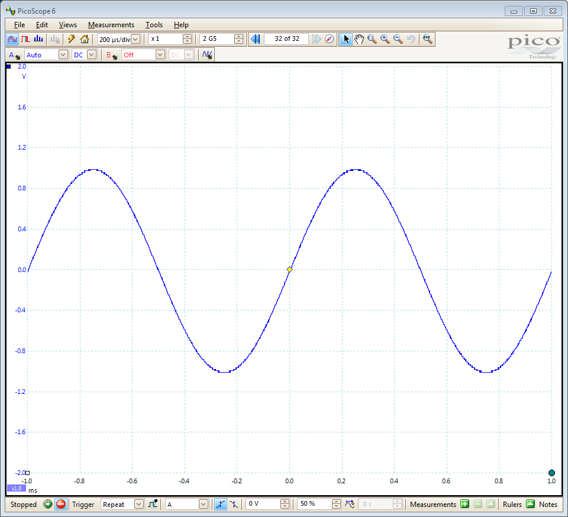
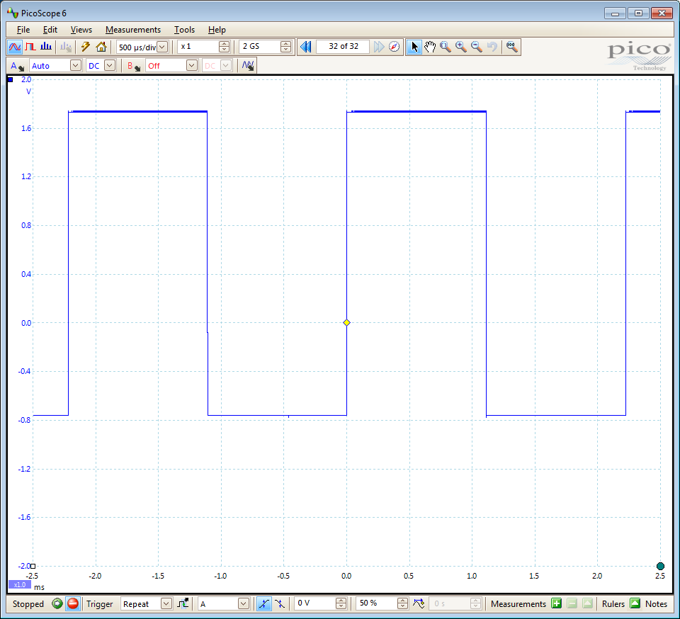
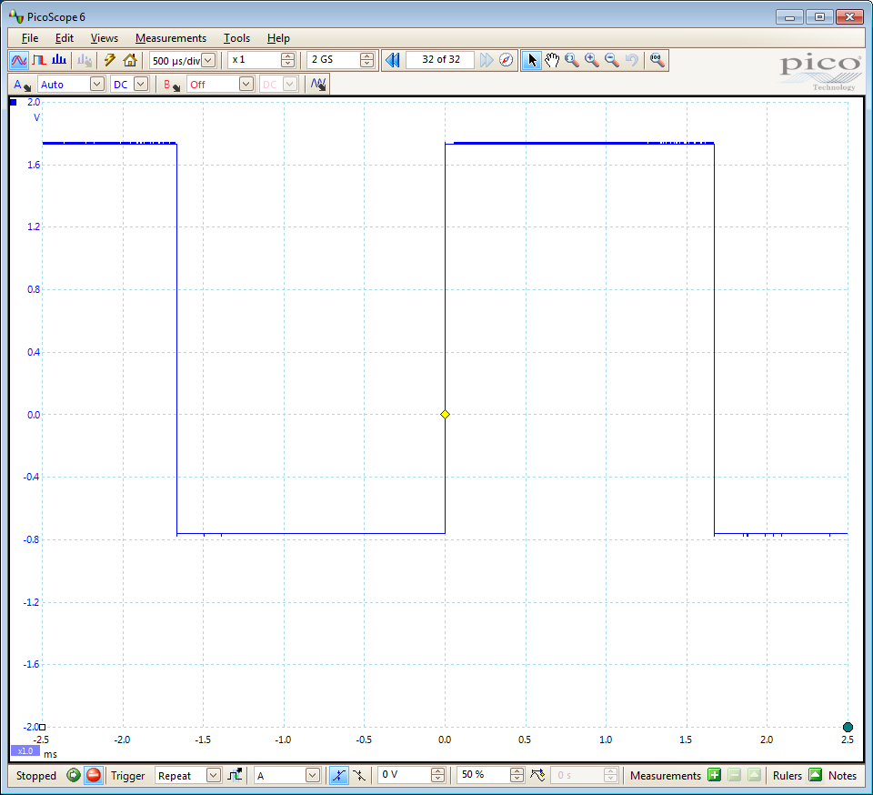
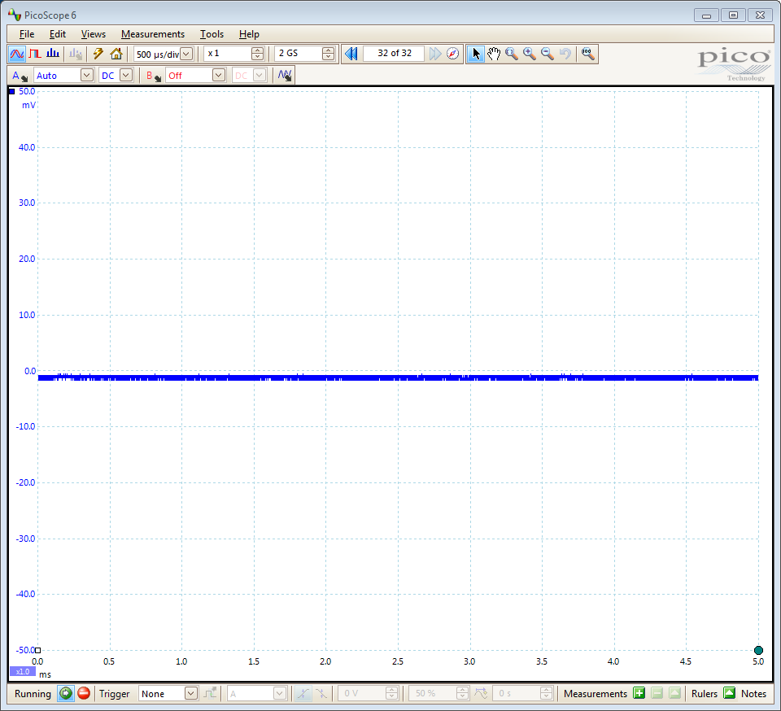
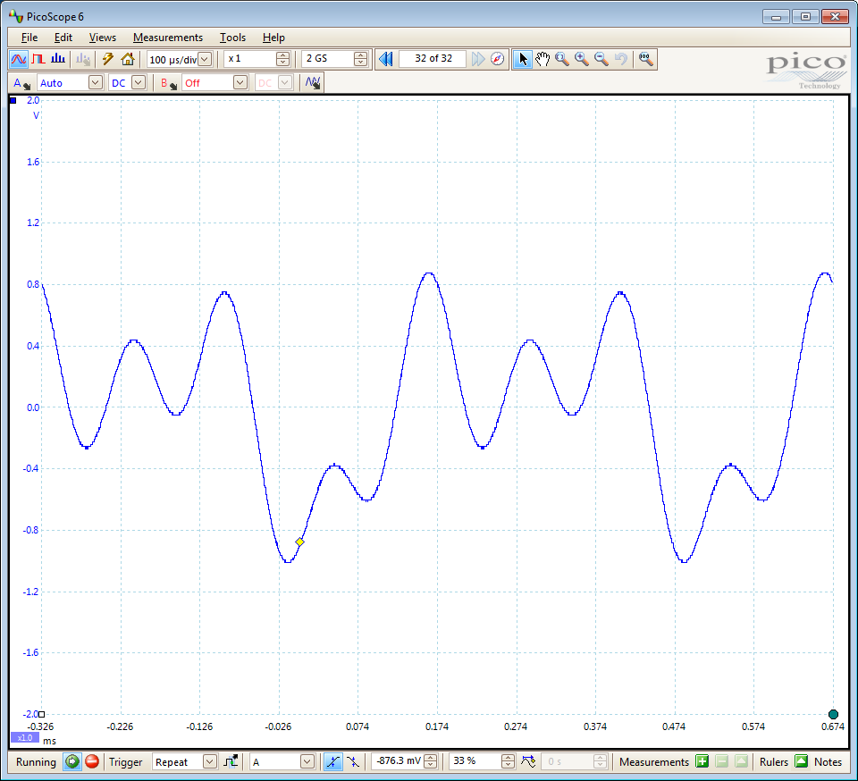
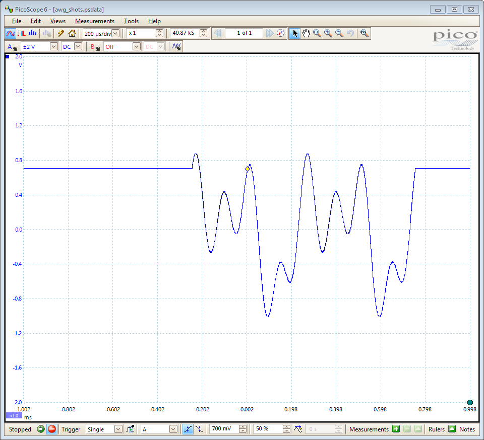

PS3000A_IC_GENERIC_DRIVER_SIG_GEN
Code for communicating with an instrument in order to control the signal generator.
This is a modified version machine generated representation of an instrument control session using a device object. The instrument control session comprises all the steps you are likely to take when communicating with your instrument. These steps are:
1. Create a device object
2. Connect to the instrument
3. Configure properties
4. Invoke functions
5. Disconnect from the instrumentTo run the instrument control session, type the name of the file, PS3000A_IC_Generic_Driver_Sig_Gen, at the MATLAB command prompt.
The file, PS3000A_IC_GENERIC_DRIVER_SIG_GEN.M must be on your MATLAB PATH. For additional information on setting your MATLAB PATH, type 'help addpath' at the MATLAB command prompt.
Example: PS3000A_IC_Generic_Driver_Sig_Gen;
See also ICDEVICE.
Copyright: Pico Technology Limited 2015
Author: HSM
Creation time: 27-Feb-2015 15:40:03
History:
15Apr15 HSM Modified script for publishing.
Contents
- Test Setup
- Load Configuration Information
- Device Connection
- Obtain Signal Generator Group Object
- Function Generator - Simple
- Function Generator - Sweep Frequency
- Turn Off Signal Generator
- Arbitrary Waveform Generator - Set Parameters
- Arbitrary Waveform Generator - Simple
- Turn Off Signal Generator
- Arbitrary Waveform Generator - Output Shots
- Turn Off Signal Generator
- Disconnect
Test Setup
For this example the 'Gen' output of the oscilloscope was connected to Channel A on another PicoScope oscilloscope running the PicoScope 6 software application. Images, where shown, depict output, or part of the output in the PicoScope 6 display.
Load Configuration Information
PS3000aConfig;
Device Connection
% Create a device object. ps3000aDeviceObj = icdevice('picotech_ps3000a_generic.mdd'); % Connect device object to hardware. connect(ps3000aDeviceObj);
Copyright (C) Pico Technology Ltd. 2014 - 2015
PicoScope 3000 Series MATLAB Instrument Driver
Number of units found: 1
Serial number(s): CU654/001
Opening PicoScope 3000 Series device...
Instrument Device Object Using Driver : picotech_ps3000a_generic.mdd
Instrument Information
Type: Oscilloscope
Manufacturer: Pico Technology Ltd.
Model: PicoScope 3000 Series (A API)
Driver Information
DriverType: MATLAB generic
DriverName: picotech_ps3000a_generic.mdd
DriverVersion: 1.2.14
Communication State
Status: open
Setting Device Parameters...
Default Analogue Channel Setup:-
--------------------------------
Channel A:-
Enabled: True
Coupling: DC
Range: 5V
Analogue Offset: 0.0V
Channel B:-
Enabled: True
Coupling: DC
Range: 5V
Analogue Offset: 0.0V
Turning off Equivalent Time Sampling...
Turning off trigger...
Default Block mode parameters:-
Timebase index : 64
Time Interval: 496.0 ns
Number of pre-trigger samples: 0
Number of post-trigger samples: 1000000
Total number of samples: 1000000
Default Streaming mode parameters:-
Streaming interval: 1.00e-06 s
Streaming auto stop: 1
Default Signal generator parameters:-
Start frequency: 1000 Hz
Stop frequency: 1000 Hz
Offset voltage: 0 mV
Peak to Peak voltage: 2000 mV
Initialisation complete.
Connected to PicoScope 3000 Series device:-
Instrument Model: 3204D
Batch/Serial Number: CU654/001
Analogue Channels: 2
Bandwidth: 70 MHz
Buffer memory: 128 MS
Maximum sampling rate: 1 GS/s
Signal Generator Type: Arbitrary Waveform Generator
Obtain Signal Generator Group Object
Signal Generator properties and functions are located in the Instrument Driver's signalGenerator group.
sigGenGroupObj = get(ps3000aDeviceObj, 'Signalgenerator');
sigGenGroupObj = sigGenGroupObj(1);
Function Generator - Simple
Output a Sine wave, 2000mVpp, 0mV offset, 1000Hz (uses preset values for offset, peak to peak voltage and frequency)
[status.setSigGenBuiltInSimple] = invoke(sigGenGroupObj, 'setSigGenBuiltInSimple', 0);

Function Generator - Sweep Frequency
% Configure property value(s). set(ps3000aDeviceObj.Signalgenerator(1), 'startFrequency', 50.0); set(ps3000aDeviceObj.Signalgenerator(1), 'stopFrequency', 500.0); set(ps3000aDeviceObj.Signalgenerator(1), 'offsetVoltage', 500.0); set(ps3000aDeviceObj.Signalgenerator(1), 'peakToPeakVoltage', 2500.0); % Execute device object function(s). % Wavetype : 1 (ps3000aEnuminfo.enPS3000AWaveType.PS3000A_SQUARE) % Increment : 50.0 (Hz) % Dwell Time : 1 (s) % Sweep Type : 1 (ps3000aEnuminfo.enPS3000ASweepType.PS3000A_DOWN) % Operation : 0 (ps3000aEnuminfo.enPS3000AExtraOperations.PS3000A_ES_OFF) % Shots : 0 % Sweeps : 0 % Trigger Type : 0 (ps3000aEnuminfo.enPS3000ASigGenTrigType.PS3000A_SIGGEN_RISING) % Trigger Source : 0 (ps3000aEnuminfo.enPS3000ASigGenTrigSource.PS3000A_SIGGEN_NONE) % Ext. Threshold : 0 invoke(sigGenGroupObj, 'setSigGenBuiltIn', 1, 50.0, 1, 1, 0, 0, 0, 0, 0, 0);


Turn Off Signal Generator
Sets the output to 0V DC
[status.setSigGenOff] = invoke(sigGenGroupObj, 'setSigGenOff');

Arbitrary Waveform Generator - Set Parameters
% Configure property value(s). set(ps3000aDeviceObj.Signalgenerator(1), 'startFrequency', 2000.0); set(ps3000aDeviceObj.Signalgenerator(1), 'stopFrequency', 2000.0); set(ps3000aDeviceObj.Signalgenerator(1), 'offsetVoltage', 0.0); set(ps3000aDeviceObj.Signalgenerator(1), 'peakToPeakVoltage', 2000.0); % Define Arbitrary Waveform - must be in range -1 to +1 % Arbitrary waveforms can also be read in from text and csv files using % dlmread and csvread respectively. % AWG Files created using PicoScope 6 can be read using the above method. awgBufferSize = get(sigGenGroupObj, 'awgBufferSize'); x = linspace(0, 360, awgBufferSize); y = normalise(sind(x) + sind(2*x + 90) + sind(4*x + 45));
Arbitrary Waveform Generator - Simple
Output an arbitrary waveform with constant frequency
% Arb. Waveform : y (defined above) [status.setSigGenArbitrarySimple] = invoke(sigGenGroupObj, 'setSigGenArbitrarySimple', y);

Turn Off Signal Generator
Sets the output to 0V DC
[status.setSigGenOff] = invoke(sigGenGroupObj, 'setSigGenOff');
Arbitrary Waveform Generator - Output Shots
% Increment : 0 (Hz) % Dwell Time : 1 (s) % Arb. Waveform : y (defined above) % Sweep Type : 0 (ps3000aEnuminfo.enPS3000ASweepType.PS3000A_UP) % Operation : 0 (ps3000aEnuminfo.enPS3000AExtraOperations.PS3000A_ES_OFF) % Shots : 2 % Sweeps : 0 % Trigger Type : 0 (ps3000aEnuminfo.enPS3000ASigGenTrigType.PS3000A_SIGGEN_RISING) % Trigger Source : 4 (ps3000aEnuminfo.enPS3000ASigGenTrigSource.PS3000A_SIGGEN_SOFT_TRIG) % Ext. Threshold : 0 [status.setSigGenArbitrary] = invoke(sigGenGroupObj, 'setSigGenArbitrary', 0, 1, y, 0, 0, 0, 2, 0, 0, 4, 0); % Trigger the AWG % State : 1 [status.sigGenSoftwareControl] = invoke(sigGenGroupObj, 'ps3000aSigGenSoftwareControl', 1);

Turn Off Signal Generator
Sets the output to 0V DC
[status.setSigGenOff] = invoke(sigGenGroupObj, 'setSigGenOff');
Disconnect
Disconnect device object from hardware.
disconnect(ps3000aDeviceObj);
Close unit status: 0 Device with serial number CU654/001 closed successfully. Libraries unloaded successfully.